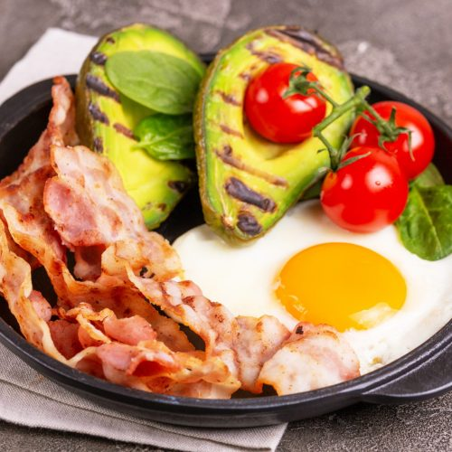

Bacon and Eggs

Description
This shit is simple and litterally tastes good all the time.
Ingredients
- 2 eggs.
- Bacon.
- Avocado.
- Cherry tomatoes.
- Salt and pepper.
- Everything but the bagel seasoning.
Steps
- Start frying as much bacon you can eat without feeling embarrased.
- Protip: Cook it in the over at 350 until it looks good as fuck.
- Fry or scramble 2 eggs depending on how you're feeling, season with salt and pepper.
- Quarter and peel an avocado, apply the everything seasoning.
- Cut your tamatoes in half, you can let them cook with the bacon or eat them raw.
- Eat.